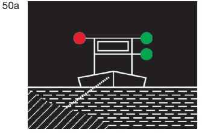
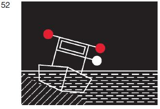
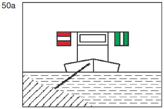
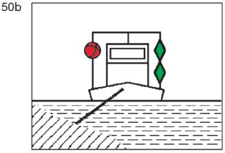
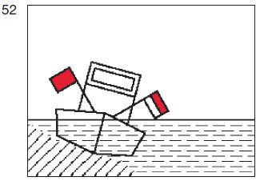

Es ist verboten, an einem der in § 3.25 genannten Fahrzeuge an der Seite vorbeizufahren, an dem es
- 1.
das rote Licht nach
§ 3.25 Nummer 1
Satz 1 Buchstabe b
Doppelbuchstabe aa,
Satz 2 Buchstabe b
Doppelbuchstabe aa,
Nummer 2 Satz 1,
|  |  |
- 2.
das Tafelzeichen
A.1 (Anlage 7)
oder den roten Ball
nach § 3.25
Satz 1 Nummer 1
Buchstabe b Doppelbuchstabe bb
|  |  |
oder
- 3.
die rote Flagge nach § 3.25 Nummer 1 Satz 2 Buchstabe b
Doppelbuchstabe bb, Nummer 2 Satz 1
| |  |
zeigt.